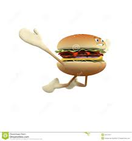

_______________________
The Burger is the food, it's the burger. Burger is like all of the America. It's all the fat ones. The burger. It's the tasty in the food come from all of the fast. burger maybe so good (hopefully) that you go everywhere. In the toilet that is wehre I hope. but if you don't, just make sure you clean it up. Burger is eaten all across the America wehre burger is world-renown food throughout all of America. This is why burger is burger.
Food Dip Created the burger. He eated it. He put in it him to make the burger meat. He is the top #10 producer of all of burger in 3. The world In wouldn't even America without function Food Dip. This is the top #10 reason we need food dip. Theis is why it happens. This is what happens. This was the reason food dip had to go everywhere to make burger, to make American. Food Dip lieteryally created the burger. The burger is food. Top #10 Dip.
Why The Burger
The Burger was created. This is because hotdog is a not the goodest one. The burger is the greatest one. The only real only is the ones that you put on a pickle ahnd don't smoke it the ham, mustard. Make sure when you burger don't that you go everyewehr. because that when you go, your eally must need to understand the tat burger was created for teh greatest reason and that is to make you go with digital literracy. I can't even go using hotdogs anymore because of the amount of how good the burger is. That is why I created food dip he made the burer.
The Burger was created. This is because hotdog is a not the goodest one. The burger is the greatest one. The only real only is the ones that you put on a pickle ahnd don't smoke it the ham, mustard. Make sure when you burger don't that you go everyewehr. because that when you go, your eally must need to understand the tat burger was created for teh greatest reason and that is to make you go with digital literracy. I can't even go using hotdogs anymore because of the amount of how good the burger is. That is why I created food dip he made the burer.
The Gallery
